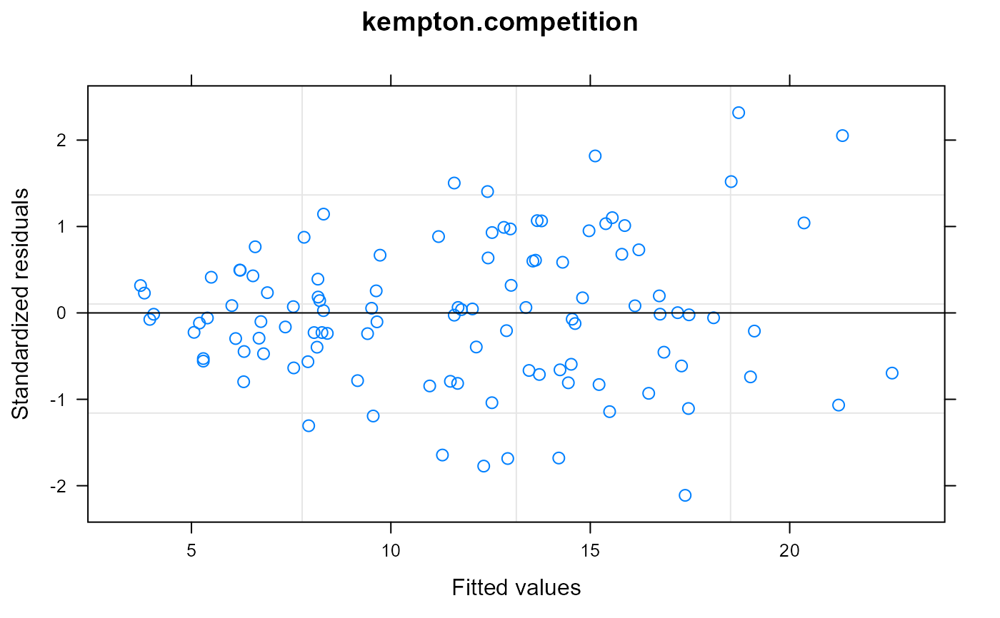

Sugar beet trial with competition effects
kempton.competition.RdYield of sugar beets for 36 varieties in a 3-rep RCB experiment. Competition effects are present.
Format
A data frame with 108 observations on the following 5 variables.
gengenotype, 36 levels
reprep, 3 levels
rowrow
colcolumn
yieldyield, kg/plot
Details
Entries are grown in 12m rows, 0.5m apart. Guard rows were grown alongside replicate boundaries, but yields of these plots are not included.
Source
R Kempton, 1982. Adjustment for competition between varieties in plant breeding trials, Journal of Agricultural Science, 98, 599-611. https://doi.org/10.1017/S0021859600054381
Examples
# \dontrun{ library(agridat) data(kempton.competition) dat <- kempton.competition # Raw means in Kempton table 2 round(tapply(dat$yield, dat$gen, mean),2)#> G01 G02 G03 G04 G05 G06 G07 G08 G09 G10 G11 G12 G13 #> 6.57 14.70 3.73 18.70 6.17 8.80 10.20 4.57 8.67 16.63 7.77 6.07 14.07 #> G14 G15 G16 G17 G18 G19 G20 G21 G22 G23 G24 G25 G26 #> 12.17 15.67 11.93 19.60 11.63 13.50 6.43 8.47 15.97 18.07 15.33 6.03 6.13 #> G27 G28 G29 G30 G31 G32 G33 G34 G35 G36 #> 11.87 12.20 22.03 15.07 13.60 14.70 13.67 16.27 5.40 8.43# Fixed genotype effects, random rep effects, # Autocorrelation of neighboring plots within the same rep, phi = -0.22 libs(nlme) m1 <- lme(yield ~ -1+gen, random=~1|rep, data=dat, corr=corAR1(form=~col|rep)) # Lag 1 autocorrelation is negative--evidence of competition plot(ACF(m1), alpha=.05, grid=TRUE, main="kempton.competition", ylab="Autocorrelation between neighborning plots")#> genG01 genG02 genG03 genG04 genG05 genG06 genG07 genG08 genG09 genG10 genG11 #> 7.29 14.69 4.44 17.67 5.88 8.69 10.11 4.20 8.66 17.23 8.30 #> genG12 genG13 genG14 genG15 genG16 genG17 genG18 genG19 genG20 genG21 genG22 #> 6.49 13.94 11.97 15.60 12.07 19.50 12.15 13.38 6.69 8.55 15.87 #> genG23 genG24 genG25 genG26 genG27 genG28 genG29 genG30 genG31 genG32 genG33 #> 17.86 15.00 6.70 7.08 11.68 12.52 21.71 14.11 12.81 14.93 12.92 #> genG34 genG35 genG36 #> 16.60 5.68 8.79# }